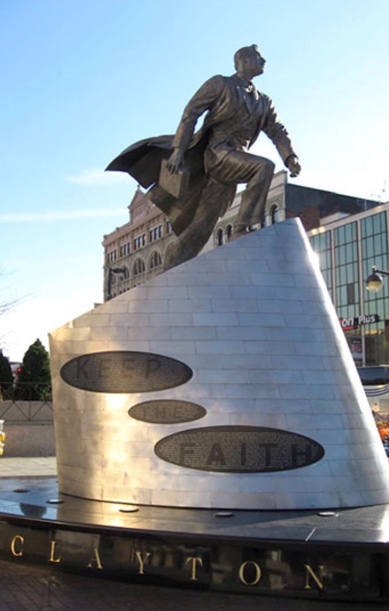

Is Education the problem?

Persistence, discipline and a lot of enthusiasm is all we need. I am encharge of my happiness! As we all have the same 24 hours in a day... CUNY is the solution: All costs associated with gaining a license and testing in the vocational programs are covered by the MEOC for students who successfully complete the program ..free opportunities at the palm of your hands. We all have the same needs. Visit the Harlem Adam Clayton Powell Jr.State Office Building named in honor to the first black congressman from New York, 15th floor for more information. Stand Up. Educate! Life is good and in the end is not the years in your life that count it is the life in your years.